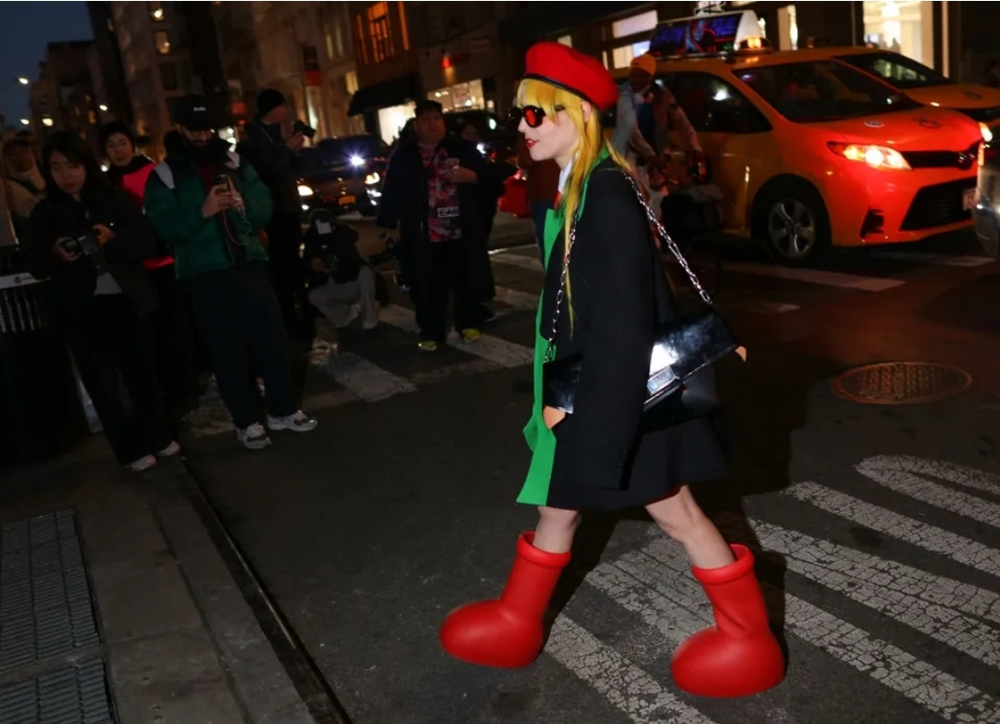
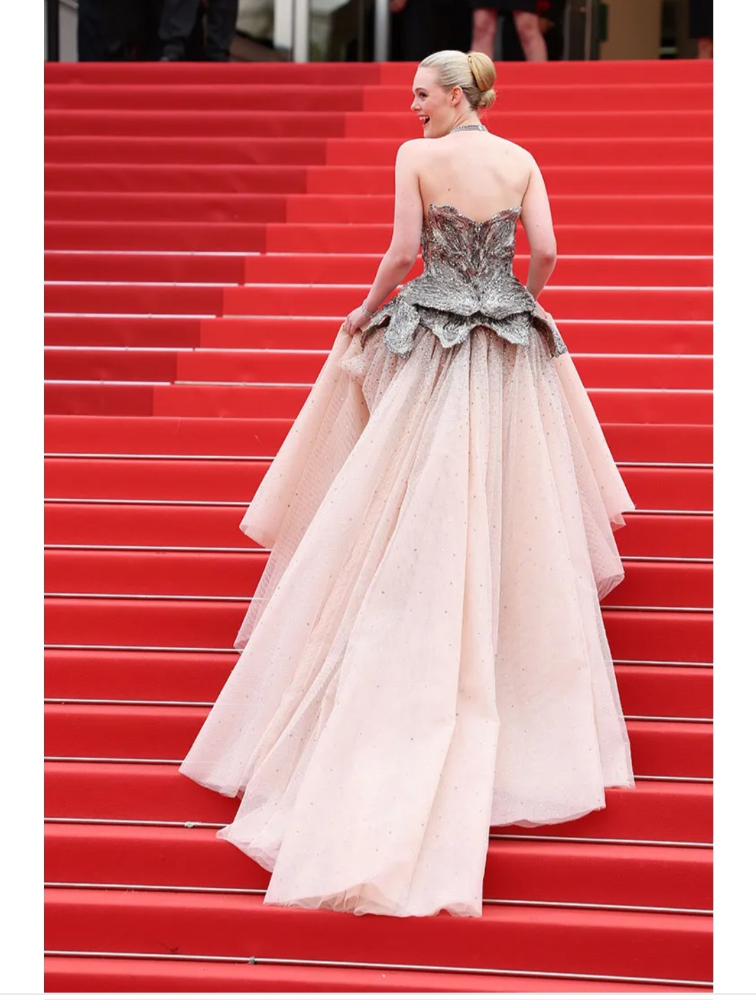

Why Is Everyone Wearing These Cartoonish Red Boots?

Published on May 25, 2023
Every New York Fashion Week, certain designer items emerge as the fashion crowd’s favorites. Last year, everyone was wearing the Prada logo tank tops and minimal strappy heels by The Row. This past week, however, dainty Manolos were eclipsed by one shoe destined to go viral: MSCHF’s big red boots, aptly named the Big Red Boot. Read more...
The Best Street Style Photos From the Resort 2024 Shows in Sydney

Published on May 25, 2023
The colorful array of printed dresses by Alémais (dubbed Australia's next Zimmermann by some of the locals) and espadrilles currently seen outside the shows in Sydney would have you almost fooled that it's summer and not autumn rapidly drifting into winter. But actually, the weather Down Under is currently 50 degrees and foggy, so while some street stylers are holding on to the remnants of the last warm days, others have embraced the elements in a chic selection of trench coats layered over button-ups, light cardigans, and riding boots. Follow along as Su Shan Leong captures the best dressed guests outside Sydney’s resort 2024 shows here. Read more...
On the Podcast: Elle Fanning on Dressing for Cannes and Ethan James Green on Vogue’s Barbie-Inspired Summer Cover

Published on May 25, 2023
She’s a Barbie girl, in a Barbie world…a Vogue Barbie world, that is! Wednesday marked the big reveal of Margot Robbie’s fabulous, fuchsia fantasy of a cover for Vogue’s Summer issue, styled by Gabriella Karefa-Johnson and photographed by Ethan James Green. Chioma and I invited Green into the studio to tell us all about the behind-the-scenes shenanigans that went into creating this magical, Alice in Wonderland-esque Barbie world. From oversized props to make Robbie appear doll-sized, to couture gowns with a Barbie twist, this shoot had it all, and who better than the photo wizard himself to pull back the Oz Read more...
Halima Aden Embraced More-Is-More Modesty Dressing for Cannes
Published on May 25, 2023
Somali-American model Halima Aden is on a personal mission: to prove that modest fashion and playful fashion are not mutually exclusive terms. “In the beginning of my career, I was like, ‘Let’s just pair a black or white turtleneck with everything,’” Aden shared with Vogue last week, from a hotel room in Midtown Manhattan, where she sat on a cream-colored couch whilst clad in a colorful Richard Quinn gown with latex gloves worn underneath. There, among multiple racks of poppy runway pieces, Aden and stylist Jason RembertRead more...